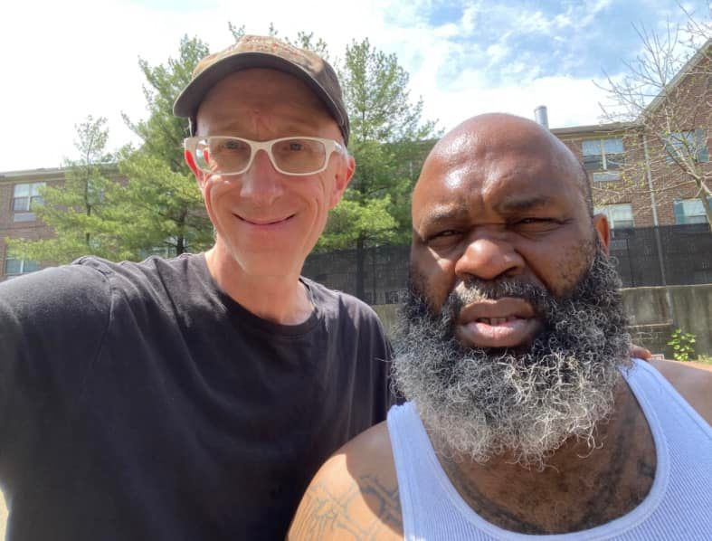

Mobile uploads
Juneteenth is a holiday celebrated on June 19 to commemorate the emancipation of enslaved people in the US.
The 13th Amendment to the United States Constitution provides that "Neither slavery nor involuntary servitude, except as a punishment for crime whereof the party shall have been duly convicted, shall exist within the United States.
I was talking to a Black homeless man who spent time in prison. He was the head cook in his prison. He was in charge of cooking breakfast and lunch for the entire prison 7 days a week. He made $24 a month for that work.
If that’s not slavery, I don’t know what is.
According to the Bureau of Justice Statistics (BJS), 15.9% of Black men are expected to have served time in state or federal prison by age 25, and 26.6% by age 40. In 2001, the Sentencing Project estimated that Black men had a 1 in 3 chance of spending time in prison during their lifetime.
As the curious person that I am, I have looked for differences in races. The question I would ask is, “are there differences in people due specifically to the color of their skin.” I can’t find it. I can see characteristic traits span across all races and genders.
Now what I CAN see are traits that span across class lines. For example, theft is very common in the Houseless community. Why? Because society has shunned them and they are looked on as dangerous and deranged. So they are left to steal as a way to buy the things they need. And yes, drugs are often (but certainly not always) what people buy. They use drugs because they are abandoned by society. They hate themselves because we hate them.
Black, White, Gay, Straight, all genders… if the person has been homeless living on the street for a significant amount of time, they probably will steal. (It’s more like opportunistic scavenging. Like the smartest raccoon you’ve ever met that knows how to use tools.) They call it pilfering.
And who do they often buy drugs from? Black men. Not always. But, in my neighborhood, usually.
The toughest people on the street are Black men followed closely by women. I know a woman who recently bashed a man’s head with a can of corn so hard that it left a dent (and blood) on the can.
SOME, not all, SOME Black men are the toughest people I know. Same with SOME women.
That has nothing to do with genetics. The completion of the Human Genome Project in 2003 confirmed humans are 99.9% identical at the DNA level and there is no genetic basis for race.
These people are tough because society has separated them and judged them since the beginning of this god forsaken country. Black people have been here longer than any white person I know. And they have been forged in the American furnace of bigotry, prejudice and sweeping hatred the entire time. OF COURSE they are going to be tough. It’s not the color of their skin that made them tough. It’s society that judged them based on the color of their skin. THAT is what made them tough. They aren’t born that way. They are made that way.
Race is not a genetic difference. Race is a made up social construct to support slavery which STILL EXISTS TODAY!
Today I’ll be dedicating to my friend Hermaine who was shot in our yard by some tough Black men. Hermaine was a very proud man. He would not let someone say something that tarnished his name. He was probably killed for the same reason. The person who killed him probably felt that Hermaine did something to wrong him.
I’ve never met a prouder person than a Black man who has known nothing other than a country that looks at him suspiciously for nothing other than the fact that his skin is a different shade of pigment than the people in power. And that’s most of them.
What a tragic and stupid waste of time, energy and community.